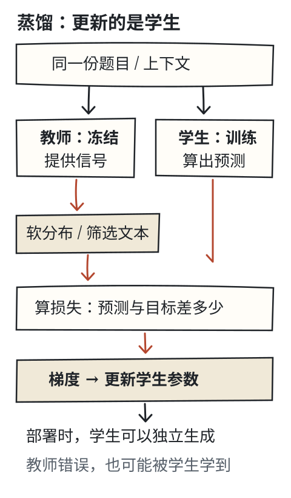
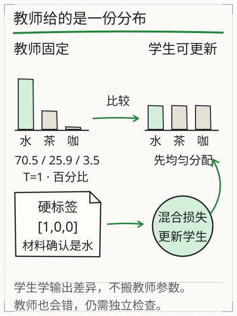

模型是怎样学会的？
你在聊天里说“答错了，再想想”，下一次回答可能就变了。可模型真的学会了吗？判断这件事，得找到参数有没有变化。下面亲手改一次参数，再和“只算一个预测”对照，就能看到学习多做了什么。

给下面刚初始化的小模型看“我喝”，观察它给“水、茶、咖啡”分了多少概率。接着把它的预测与训练文本比较，只更新一步，再看数字怎样移动。
这次先用文本当老师。后面会换成一个模型来教另一个模型：蒸馏：教师的输出怎样变成学生的参数。更新参数的动作相同，变的是训练信号从哪里来。
把“会学习”摊成一张分数表
把这个小模型摊开，其实就是一张 7×7 的分数表。七个 token 各占一行，“喝”这一行存着“喝→水”“喝→茶”等分数；取出这一行，经 softmax 就得到下一步概率。这种只看前一个 token 的模型叫 bigram 模型。
它没有注意力，也不理解长句。好处是你能直接看见哪一格变了，复查“预测—比较—更新”的全过程；它的表现代表不了大模型的能力。

让小模型学着接下一步
训练集与未见组合
训练集（保留重复）：我喝水。、我喝水。、我喝茶。、她喝咖啡。
未见组合：我喝咖啡。、她喝茶。
实线：训练损失；虚线：未见组合损失。纵轴为交叉熵（自然对数），越低表示这组目标平均获得的概率越高。
展开选中参数的一步更新
查看最近的实算曲线点
模型只按前一个 token 预测下一个 token；它不是 Transformer，不具有长上下文能力，不能从本实验推断大模型规模效应。
损失在比较什么？
训练文本“我喝水。”已经告诉我们三件事：“我”后面是“喝”，“喝”后面是“水”，“水”后面是“。”。如果模型给真实目标分的概率很低，交叉熵损失 −ln(目标概率) 就很大。这个数把“预测和训练目标差多少”变成了可以计算的量。
ln 是自然对数，前面的负号让这份损失随目标概率升高而降低。先不用背公式：把目标的概率调高，罚分就小一些；给目标的概率越接近零，罚分就越大。后面的两候选算例会把具体数值算出来。
这里一共统计 12 对训练目标，重复句子也算在内。每次更新都用全部训练对计算平均损失和梯度。曲线上的点来自当前参数，走成什么形状，要等计算完才知道。
先只点“更新一步”，展开“喝→水”的细节。把旧值、梯度、学习率代进 新值 = 旧值 − 学习率 × 梯度，算一遍，再对照界面。梯度告诉你这个参数稍微变动时，损失会怎样变；更新时减去梯度，朝局部让损失降低的方向走。如果梯度是负数，减去负数就会让参数上升。学习率决定这次走多大一步，步子过大也可能让损失升高。
推理使用参数，训练改变参数
现在暂停训练，点“只预测一次”。概率照样算出来，训练步数和参数却没动。对照刚才的更新按钮，你就能找到两条路径的分岔：预测读取现有参数，训练还会根据损失去改参数。
回到开头的聊天：你换了提问、补充了材料，通常先改变本次输入。在 DeepSeek V4.1 Flash 或 Kimi K3 中纠正一句话，后续可能因为看到了这条纠正而答得更好。仅凭回答变好，还不能说参数刚刚更新了。应用保存的记忆、服务商之后的数据处理与训练，也各有自己的过程。
训练集变好之后，还要看什么？
接下来让它连续训练，想停时随时暂停或重置。别只看实线，还看虚线：实线在训练材料上计算，虚线在未见过的句子组合上计算。后者仍可能包含训练中见过的 token 和部分相邻对，离完全陌生领域还有距离。
两条线一起降了吗？这份小数据里，有的规律两边共用，有的频率不同。即使两条线都往下，也只是这组指标改善了。实际任务中的证据是否准确、会犯哪类错、事情是否办完，还得拿独立评测材料另查。
可以在这里停下来做一次区分：损失曲线告诉你这份数据上的误差怎样变，新材料才帮助你检查学到的规律能不能用到别处。
再深一层
对于某个训练对，softmax 分数的梯度是 预测概率 − 目标指示值：目标位置的指示值为 1，其余为 0。本页把 12 对梯度相加后除以 12，再更新所有参数。
bigram 的梯度可以直接写出来。深层网络需要反向传播，把损失对各层参数的影响逐层求出，再由优化器更新。优化器、训练批次和正则化等细节会影响结果；本页只实现全批量梯度下降，最多 500 步。
“知道错了”还不够，参数怎样真的动起来？
先看看损失到底奖励了什么。目标概率从 0.5 提高到 0.8，交叉熵会从 −ln(0.5)≈0.693 降到约 0.223。模型给训练目标的机会更多了，所以分数变好。可如果训练目标本身错了呢？同一套计算也会鼓励它把错误学得更熟，损失没有顺手核验事实。

再亲手动一次参数。只留“水、茶”两个候选，分数都从 0 开始，概率各为 0.5，目标是水。水的梯度是 0.5−1=−0.5，茶的梯度是 0.5−0=0.5。学习率取 0.4，你可以算出新分数 [0.2,−0.2]：一个上升，一个下降。重新算概率，水约为 0.599，损失约为 0.513。这是独立的两候选算例，数据与七词 bigram 不同，更新原则相同。
但大模型的分数是前面很多层共同算出来的，怎样找到各层该改多少？从一个小关系看起：若 s=w×h，链式法则给出 ∂L/∂w=(∂L/∂s)×h。也就是把“损失怎样受分数影响”和“分数怎样受参数影响”接起来。反向传播沿前向计算的依赖关系把这件事扩展到各层，再由优化器更新参数。这里存下的是参数变化，并没有逐句写入一张可查询的事实更正表。
一次走多远也得控制。学习率太大，可能跨过较低损失区域，甚至发散；太小则更新慢。真实训练还要处理批次、优化器状态、数据顺序与正则化。如果训练集成绩越来越好，独立材料却越来越差，就要查过拟合、数据差异和评测泄漏。单独一条下降曲线，说明不了通用能力提高了多少。
理解了这次更新，就能接着看蒸馏：仍然沿“目标→损失→梯度→参数”往下走，只是其中一部分目标可以由另一个模型提供。
蒸馏：教师的输出，怎样变成学生的参数？
假设你已经有一个会做任务的模型，想训练另一个模型来做同样的事。能不能请前者出示范，让后者照着练？可以，这就是蒸馏的一条路：已有模型先处理输入，把概率或回答交出来，作为另一个模型的训练信号。提供示范的叫教师，接受训练的叫学生；优化器根据这些信号更新学生参数。[S43]
“老师教学生”这个说法容易理解，但先认清传递的东西：教师给出概率或回答，学生用这些材料计算损失，再更新自己的参数。这里没有剪下一部分教师权重，也没有把全部知识完整装进一个小文件。学生往往更小，通常已有预训练参数；它也可以和教师一样大、结构不同，或同时接受多个教师的信号。


先分清两种训练材料
你请教师作答，它给你一张完整候选概率表，和只给你最后写出的回答，是两份不同的材料。给定同一段前文，前者告诉你下一 token 在整个词表上的分布，后者只留下已经生成的序列。都能用来训练学生，但不能混着说。
| 能拿到什么 | 学生怎样学 | 没拿到什么 |
|---|---|---|
| 对齐候选的教师 logits 或概率 | 让学生分布靠近教师分布，常用交叉熵或 KL | 不因此得到教师内部权重或所有能力 |
| 教师生成的答案、解释或推理文本 | 将筛选后的文本当示范，用自回归交叉熵训练 | 生成时没选中的完整候选分布 |
第一种常叫软标签蒸馏；第二种常见于序列级或响应蒸馏。你手头的接口如果只返回文字，就用它产生第二类材料。文字没有保存那些没被选中的候选，不能从答案倒推完整分布；即使接口附带少数 token 的 logprob，也还不是整个词表的概率。[S43/S44]
为什么不只告诉学生“答案是水”？
还记得那个不知道装了什么的杯子吗？这一题额外提供一条已核实材料：“杯中是水”。现在才有依据把水设为目标。为了手算，候选只留“水、茶、咖啡”：硬标签 [1,0,0] 给水标 1，另外两项标 0。看这三个数，你知道目标是谁，却看不出茶和咖啡有什么相对区别。
再看教师的人工分数 [3,2,0]。温度为 1 时，概率约为 [70.54%,25.95%,3.51%]。它除了偏向水，还把茶放在咖啡前面。软目标把这种相对关系也交给学生，学生要学的是整个分布怎样分配，而不只记住“第一名是水”。


这些关系可能有帮助，也可能带着教师的偏差。尤其别把茶的 25.95% 看成杯中有茶的可能性：题目已经核实杯中是水，25.95% 描述的是教师的生成分布。
把这个小例子搬到真实语言模型，每个位置通常要比较整个词表。先检查两边是不是在同一上下文、同一目标位置上比较同样含义的候选。若教师数组的第 2 项和学生第 2 项根本不是同一片段，按下标相减就失去了意义；不同词表、分词器需要处理对齐。只用回答文本时，则可以让学生自己的分词器重新编码示范。
温度把分布展开，但没有增加事实
对分数 z，温度 T 下的概率为：
pᵢ(T) = exp(zᵢ/T) / Σⱼ exp(zⱼ/T)
先只看“水”这一项：i 指当前候选，zᵢ 是它的分数；分母的 Σⱼ 表示把所有候选对应的值加起来。exp 是指数运算。整式仍是在做“水的那一份除以全部份额”，只是先用 T 调整了分数差距。
试着把 T 从 1 调到 2。教师分布约变成 [54.65%,33.15%,12.20%]：最高的一项收了些，原来很小的咖啡一项抬了起来，低概率项更容易参与训练。比较时教师、学生都用同一个 T，不能一边调热、一边不动，再把差异全算到学生头上。[S43]
继续升高温度，分布会越来越接近均匀，原本有用的区别也可能变淡，所以温度没有越高越好的保证。这里调的是训练分布的温度，和部署时抽样生成的温度要分开设置。
实验里并排显示 q(T) 和 q(1)，它们是同一个学生、同一组分数在两种温度下的概率。你只动 T 时，只是在重算概率；按下训练按钮，才真的更新参数。
先沿分镜走完一次更新。停在两张概率表并排出现的地方：教师已经给了示范，学生的参数还没动。下一步比较它们的差异，再用梯度改学生分数，最后重新算概率。看前后两幅时，分别找出教师保持不变的那一列、学生发生变化的那一列。
慢放一次：学生怎样跟着训练信号改一步
沿用 X09 的默认设置：温度 2、软目标权重 0.7、学习率 0.4，只优化当前上下文的三个学生 logits，没有完整语言网络或泛化测试。
教师与学生都用温度 2，候选顺序同为水、茶、咖啡。教师给“水” 54.65%，学生起步给每项 33.33%；先对齐，才能逐项比较。
训练同时使用软目标和已核实的硬标签“水”：软项为 0.7 × T² × KL，硬项为 0.3 × CE。混合损失是 0.7378，对学生三个 logits 的梯度为 [-0.4985, 0.1026, 0.3959]。下一步按梯度的反方向更新，不是把教师的参数抄过来。
按“新分数 = 旧分数 − 学习率 × 梯度”，学生从 [0, 0, 0] 变为 [0.1994, -0.0410, -0.1584]。学习率是 0.4；教师的 [3, 2, 0] 保持不变。
仍用温度 2，学生给水、茶、咖啡的概率变为 36.73%、32.57%、30.71%，教师三项仍是 54.65%、33.15%、12.20%。用更新后的学生分数重算同一道题，混合损失从 0.7378 降到 0.5827。这里只能说明这次更新改善了当前训练目标；教师可能出错，学生在新题上的表现仍要单独测。
![1．让两个分布对齐：教师与学生都用温度 2，候选顺序同为水、茶、咖啡。教师给“水” 54.65%，学生起步给每项 33.33%；先对齐，才能逐项比较。 2．算差距，也算调整方向：训练同时使用软目标和已核实的硬标签“水”：软项为 0.7 × T² × KL，硬项为 0.3 × CE。混合损失是 0.7378，对学生三个 logits 的梯度为 [-0.4985, 0.1026, 0.3959]。下一步按梯度的反方向更新，不是把教师的参数抄过来。 3．沿反方向更新学生：按“新分数 = 旧分数 − 学习率 × 梯度”，学生从 [0, 0, 0] 变为 [0.1994, -0.0410, -0.1584]。学习率是 0.4；教师的 [3, 2, 0] 保持不变。 4．再算一次，检查有没有变好：仍用温度 2，学生给水、茶、咖啡的概率变为 36.73%、32.57%、30.71%，教师三项仍是 54.65%、33.15%、12.20%。用更新后的学生分数重算同一道题，混合损失从 0.7378 降到 0.5827。这里只能说明这次更新改善了当前训练目标；教师可能出错，学生在新题上的表现仍要单独测。](../../book/assets/handdraw/llm/distillation-steps.svg)
- 让两个分布对齐。教师与学生都用温度 2，候选顺序同为水、茶、咖啡。教师给“水” 54.65%，学生起步给每项 33.33%；先对齐，才能逐项比较。
- 算差距，也算调整方向。训练同时使用软目标和已核实的硬标签“水”：软项为 0.7 × T² × KL，硬项为 0.3 × CE。混合损失是 0.7378，对学生三个 logits 的梯度为 [-0.4985, 0.1026, 0.3959]。下一步按梯度的反方向更新，不是把教师的参数抄过来。
- 沿反方向更新学生。按“新分数 = 旧分数 − 学习率 × 梯度”，学生从 [0, 0, 0] 变为 [0.1994, -0.0410, -0.1584]。学习率是 0.4；教师的 [3, 2, 0] 保持不变。
- 再算一次，检查有没有变好。仍用温度 2，学生给水、茶、咖啡的概率变为 36.73%、32.57%、30.71%，教师三项仍是 54.65%、33.15%、12.20%。用更新后的学生分数重算同一道题，混合损失从 0.7378 降到 0.5827。这里只能说明这次更新改善了当前训练目标；教师可能出错，学生在新题上的表现仍要单独测。
分镜用的是下方实验的默认条件。现在点一次“更新学生一步”，对照旧分数、梯度和新分数；想检查温度的作用，就先重置，只调 T，不更新。你会看到“重新计算一张概率表”和“训练一次”确实是两件事。
把教师分布变成学生的一步更新
本题已核实杯中是水；比较三种候选的训练信号
| 候选 | 教师 p(T) | 学生 q(T) | 学生 q(1) |
|---|
只优化同一个上下文的三项学生 logits；没有语言网络、反向传播穿层或泛化测试，不是实际模型输出。硬标签“水”由本题材料指定，教师的概率不是真实情况的证据。 改温度、权重或教师会重置学生，便于从同一初始状态比较；最多 100 步。
学生到底在最小化什么？
学生分布变得像教师，要怎样记分？用 p 表示固定教师、q 表示学生，一种常见的差异度量是：
KL(p(T) ‖ q(T)) = Σᵢ pᵢ(T) × ln[pᵢ(T) / qᵢ(T)]
ln 是自然对数。读这条式子时，逐个候选比较教师概率与学生概率的比例，再取对数、乘教师给它的权重，最后加起来。单项可以为负，完整的 KL 总和才是非负的差异度量；不要把某一个候选的单项当成整份损失。
公式里每一项都由教师 p 加权，因此方向有意义。把 p、q 交换成 KL(q‖p)，不是同一个算法。教师固定时，上面的 KL 和软目标交叉熵只差一个不随学生参数变化的教师熵，对学生产生相同梯度。
我们还握着“杯中是水”这条硬标签 y，是否只能扔掉一份材料？不必。可以把核实过的硬标签与教师软目标混在一起：
L = α × T² × KL(p(T) ‖ q(T))
+ (1−α) × CE(y, q(1))
α 是调节两种信号份量的旋钮：α=0 时只学硬标签，α=1 时只匹配教师。硬标签这部分用 T=1。因为这里的已核实目标只有一个，CE = −ln q目标(1)；换一种训练配方，写法也可以不同。
中间为什么多出一个 T²？看未经补偿的软目标梯度 (qᵢ(T)−pᵢ(T))/T：先有一次除以 T。在较高温度、固定分数差等近似条件下，括号里的概率差还会大致缩小 1/T，合起来约按 1/T² 缩小。乘 T² 是为了补偿这类尺度变化，让软目标能和硬目标共同使用。这个近似不保证不同温度下梯度完全相同，更不是把准确率乘 T²。[S43]
乘过 T² 后，混合损失对学生分数 sᵢ 的梯度如下。sᵢ 是学生给第 i 个候选的原始分数；∂L/∂sᵢ 表示稍微改变这个分数时，损失会朝什么方向、以多大速率变化：
∂L/∂sᵢ = αT(qᵢ(T)−pᵢ(T))
+ (1−α)(qᵢ(1)−yᵢ)
接着用前面学过的动作：新分数 = 旧分数 − 学习率 × 梯度。这里把三个分数直接当作学生参数，你能看到它们逐项变化；深层网络则还要把梯度反传到学生各层。在这份配方里，教师冻结，更新的只有学生。
损失下降，也可能把错误学进去
先用默认条件更新一步，核对旧值、梯度、新值和损失。然后做一次故意的破坏：保持 α=0.7、T=2，把教师换成偏向茶的 [0,3,2]。题目明明核实了是水，学生下一步会往哪里走？
实际算完，学生第一步给水的推理概率会下降。这个权重下，错误教师的软信号压过了硬标签信号：学生往教师那边靠近了，对已经核实的“水”却分得更少。这就是为什么不能只看蒸馏损失有没有下降。
再把 α 调到 0，更新一步，学生只按硬标签学习。这里要观察的是数据和权重怎样共同影响方向，不是宣布 α=0 永远最好。即使 KL 很小，也只说明学生在这些输入上的分布很像教师；教师错得很稳定时，学生也可能学得很像。
只有教师回答文本时，训练怎样进行？
如果接口只给你一段回答，前面的整张概率表就用不上了。不过，那段回答本身也可以成为训练材料。设教师对题目 x 生成示范序列 ŷ₁,…,ŷₘ，学生的一个常见目标是：
L文本 = −Σₜ ln q学生(ŷₜ | x, ŷ_<t)
公式中的 ŷ_<t 就是示范里已经写在前面的部分。训练时把这段前缀给学生，让它预测下一个示范 token，这叫 teacher forcing。每个 token 仍用交叉熵来训练，只是整段监督目标来自教师。经典序列蒸馏用教师解码出的序列近似序列分布，不必保存所有候选序列的概率。[S44]
真正动手时，流程通常是“设计题目→教师生成→核对和筛选→用学生分词器编码→训练学生→独立评测”。别在拿到一大批回答后就跳过筛选：其中的错误答案、缺失条件和矛盾解释，都会被当成要学的目标。还要去重，排除评测题及其近似改写，并保留来源和错误类型，才有依据判断学生能否处理未见任务。
最简单的响应蒸馏可以离线进行：教师先交出固定示范，学生之后拿它训练。另一些方法会先采样学生自己的回答，再请教师反馈，减轻“训练时一直沿着教师前缀走，实际生成却沿自己的前缀走”带来的差异。这些方法没有在本课实现；刚才的三候选实验只展示一次更新，不是一套完整语言模型蒸馏流程。
推理蒸馏：学到的“推理”是哪一层？
只给答案，与连解题步骤一起给，学生可见的材料有什么不同？后者若包含有效中间步骤，就能提供更多拆分问题和作答模式的信号。训练仍然是从数据更新学生参数；拿到一篇解释，不等于读取或复制了教师不可见的内部思维。
你还需要逐步检查那篇解释。学生可能模仿一长串步骤，也把前后矛盾、答案对但过程错的部分一起学走。用未进训练的数据核对答案、条件和中间步骤；数学或代码任务能执行时，加独立验证，开放任务则先写清评价依据。篇幅变长、损失下降、措辞像老师，都不能省掉这些检查。
一个可核查的历史例子是 2025 年 DeepSeek-R1 首版报告第 2.4 节：它描述用整理的教师数据微调 Qwen/Llama 系列学生，报告该组蒸馏模型没有再加 RL 阶段。这是该版本的具体配方，不能推广成“蒸馏从不用 RL”，也不能移给 DeepSeek V4.1 Flash 或 Kimi K3；后两者的实际蒸馏路线需要各自公开依据。[S45]
和微调、量化、剪枝、RAG 分别是什么关系？
| 方法 | 主要改什么 | 蒸馏与它的关系 |
|---|---|---|
| 监督微调 SFT | 用示范数据更新参数 | 教师响应可以成为 SFT 数据；数据来源与训练目标是两个维度 |
| 强化学习 RL | 根据奖励优化行为策略 | 可以与蒸馏前后结合；蒸馏不自动等于 RL |
| 量化 | 权重或计算的数值精度 | 不等于跟教师学习；可对蒸馏后的学生再量化 |
| 剪枝 | 删除或稀疏化部分连接/结构 | 改结构的机制不同，也可与蒸馏组合 |
| RAG | 取回材料，提供给本次输入 | 通常不更新模型参数；资料常变时不应靠蒸馏替代更新与引用 |
为什么费这番工夫？一种实际考虑是教师使用昂贵，学生更适合部署。但省多少，要看学生结构、硬件、序列长度和实际任务，出训练材料与训练学生本身也有成本。不能预先承诺固定压缩倍数、必然更快或覆盖教师全部任务；在有限任务上，学生也可能因为数据、目标和评测条件不同而超过教师。
真要用时，先做一个可比较的验证
开始前，把问题写具体：要改善哪类任务、减少哪种错误、满足什么部署限制？留一份没有参与采样、筛选或训练的评测集。在相同输入、解码设置和可比硬件上，分别测试未蒸馏学生、蒸馏后学生和教师，记下正确性、证据或步骤错误、时延和内存。条件不一致的地方保留说明，演示数字也只说明那次条件下的结果。
训练数据还需具备可用于相应用途的授权，涉及个人信息的材料要按实际约束处理。知识更新快、需要逐条引用或只做少量任务时，先比较检索、提示和工具是否已能满足条件，再决定是否值得建立蒸馏流程。
合上这一节，再判断两件事
- 教师概率
[0.6,0.3,0.1]与硬标签[1,0,0]各提供了什么？如果教师错了，学生会怎样？ - 只有教师生成的长篇解释，能否宣称自己匹配了教师全部词表概率，或复制了教师内部思维？
对照自己的解释
软目标给出各候选的相对概率，硬标签只指定目标；教师错误也可变成学生的训练信号，需要核对数据与独立评测。文本示范没有给出完整未选候选分布，也没有暴露教师内部状态；响应/推理文本蒸馏必须按实际提供的信息说明范围。